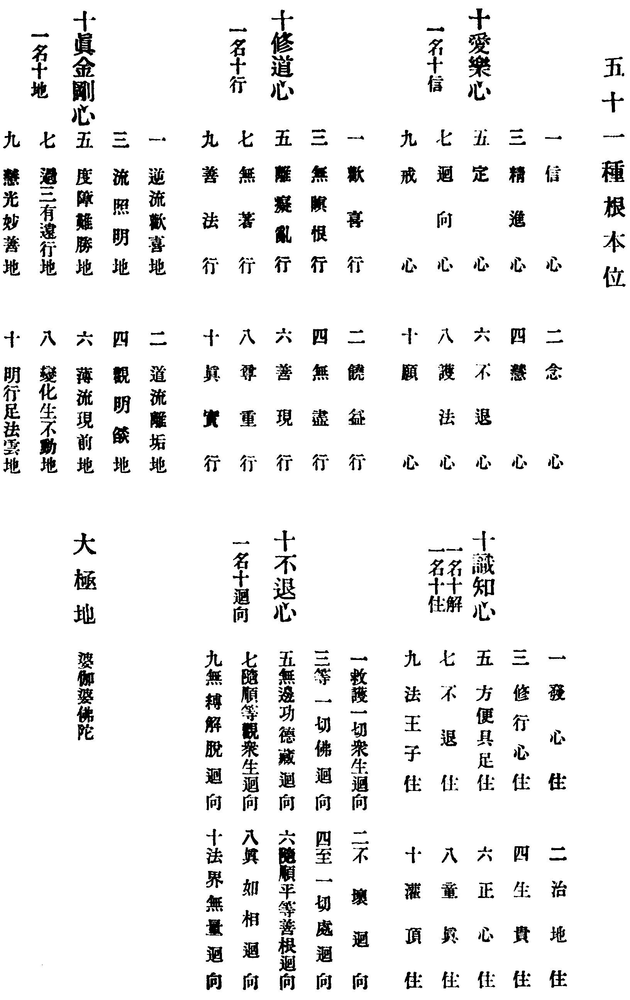
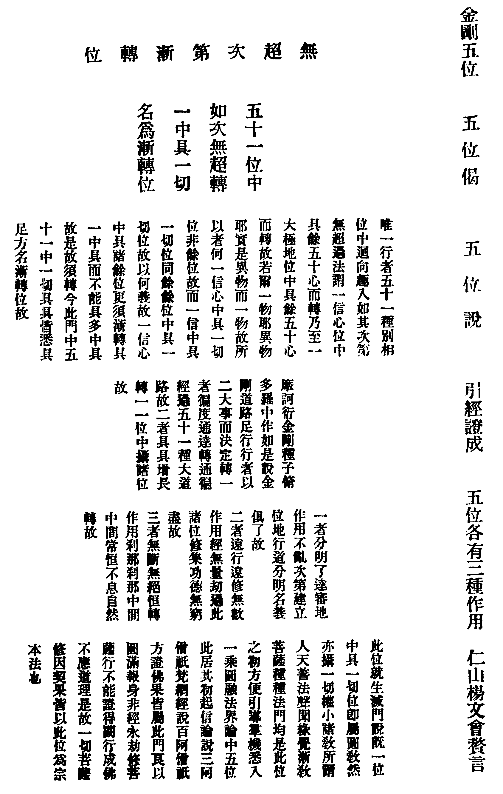
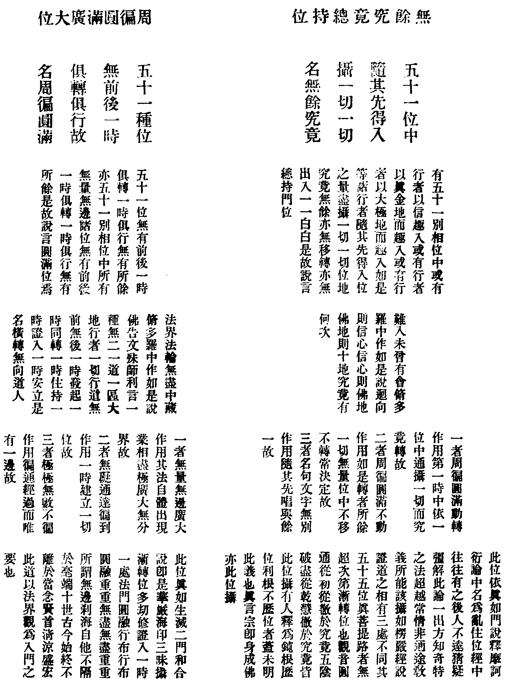
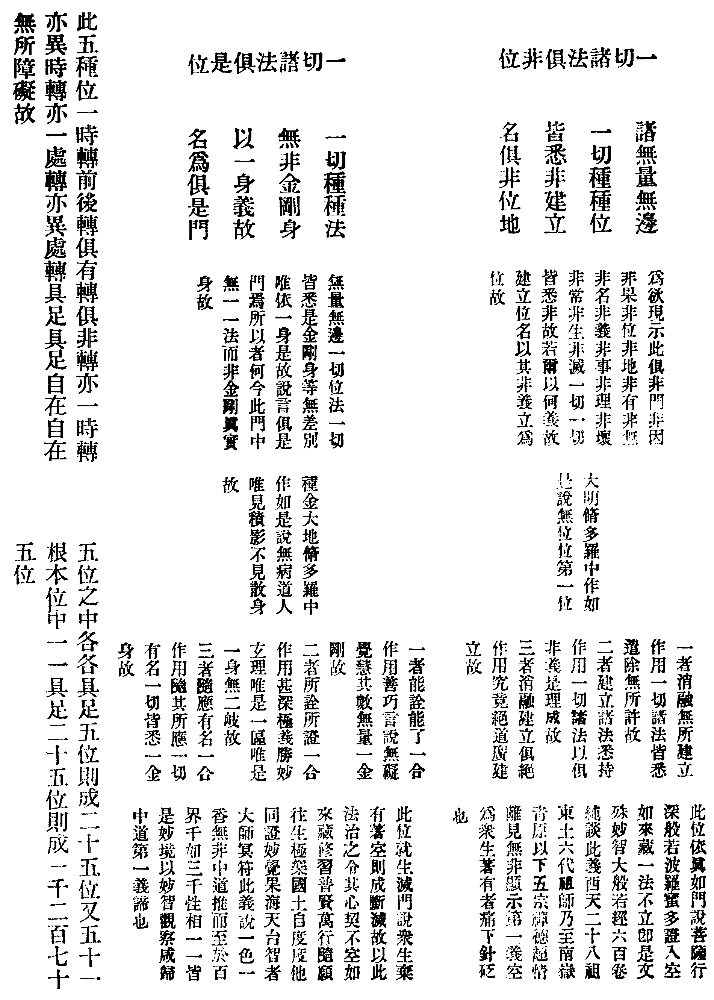

卍新纂大日本續藏經 第46冊
No.776 大宗地玄文本論略註 (4卷)
【清 楊文會略註】
第 1 卷
大宗地玄文本論。建立金剛五位。以眾生無量劫來業果相續。非三僧祇修證之功。不能盡除。故立無超次第漸轉位。以眾生一念相應。即同諸佛。故立無餘究竟總持位。以眾生心含法界。普融無盡。故立周徧圓滿廣大位。以眾生念念著有。違解脫門。故立一切諸法俱非位。以眾生棄有著空。趣於斷滅。故立一切諸法俱是位。上之五位。為佛法之總綱。攝盡一切破障法門。該括一切稱性法門。纖毫無遺。若明此義。則談宗談教。說有說空。皆不相妨。何有分河飲水。互相是非之弊哉。奈何千餘年來。無人提唱。遂使無上妙法。祕而不宣。誠不解其何故也。或以論中名義玄微。皆是法身大士行相。非凡位所知。師家艱於應對。故不以此論示人。然一切悉知。必至佛果。等覺以還。隨分演說。不害其德望也。儒門所謂知之為知之。不知為不知。是知也。會竊取此義。略加註釋。所未知者。斷不強解。庶幾後學得一隙明。或有利根上智。頓入甚深法界。徹底通達。是所望也。其文義明顯者。亦不詮釋。閱者自能領會耳。
光緒三十二年冬十月石埭楊文會仁山氏識(時年七十)
高麗古藏作二十卷。與起信論序相符。宋元藏皆未收入。明藏作八卷。復併作四卷。今從之。
此論窮微極妙。專接利根上智。兼為凡小權漸之機。作一乘勝因。伏願見者聞者。熏習成種。久久純熟。心光發宣。即能頓入金剛信位。圓修圓證。五位齊彰。與論主大願。註者誠心。交光相羅。如寶絲網。輾轉開導。無有既極。




No. 776
大宗地玄文本論略註卷第一
(大宗地者。一切法門之總綱。如地發生萬物。義理深微。故稱玄文。千枝萬葉從此分佈。故名為本。論者決擇。徵釋。翼贊佛經也。又本論之外。應有釋論以伸其義。惜未傳來)。
○歸依德處無邊大決擇分第一
頂禮一切無餘明 非一非一諸則地
不數不思無量一 并諸種種趣生類
本無量數斷命品 與等塵塵無有法
兼不可說無所有 通俱非是等諸法
論曰。就此二行偈中(天竺偈頌。八字成句。四句為一偈。貝葉梵文。橫書三十二字作一行。譯成漢文。五字七字不等。亦以四句為一行偈)。則有八門。云何為八。一者顯示中中主者門。二者顯示道路軌則門。三者顯示離雜合一門。四者顯示無邊毛生門。五者顯示種種離識門。六者顯示假有無實門。七者顯示無所有事門。八者顯示具足無礙門。是名為八。
(思議所及處。并所不及處。無非歸依德處。則能歸所歸。融合為一。十界依正。悉入自心。所造之論。攝盡十方三世一切佛法。無欠無餘。後生何幸。而能得此妙典耶)就顯示中中主者門中。則有五種(佛寶)。云何為五。一者隨順隨轉應身主者。二者有無無礙變身主者。三者本體本性法身主者。四者本末俱絕滿道主者。五者隨應無礙自然主者。是名為五(以上開三身為五身。一是生身。二是變化身。此二是應身。三是法身。四是自受用身。五是他受用身。此二是報身○下文引經第一)。修集行因大陀羅尼脩多羅中作如是說。爾時花輪寶光明天子則白佛言。世尊。第一導師有幾數量可思議不可思議。惟願世尊為我等眾開示顯說。我等大眾。聞其名字。常誦常念。出無明藏。到涅槃城。於是世尊告天子言。我若以神通力無量無邊阿僧祇劫中說其名字終不能盡。今當略言。為汝等眾宣說其要。善男子。其覺者數廣大圓滿過於恒沙。略說五種。云何為五。一者隨體佛。二者變體佛。三者法體佛。四者莫測佛。五者應轉佛。乃至廣說故。如偈頂禮一切無餘明故。以何義故一切導師皆名主者。以三義故。云何為三。一者自在義。諸法王故(佛為法王。於法自在)。二者頂上義。三界一故(天上天下。唯佛獨尊)。三者周徧義。無所不至故(毗盧遮那。徧一切處)。是名為三。
如是已說顯示中中主者門。次當說顯示道路軌則門(法寶)。就此門中。則有六種。云何為六。一者音臍言導無礙自在軌則。二者所依本地平等一種離諸虗妄軌則。三者生長莊嚴一一有力軌則。四者究竟圓滿無餘盡攝軌則。五者非名非相非體非用無造無作軌則。六者自然現前常住不變無所詮了究竟淨滿軌則。是名為六(第三分中所說五種本位。以此中一二兩法。為第三周徧圓滿廣大位。以第三法。為第一無超次第漸轉位。以第四法。為第二無餘究竟總持位。以第五法。為第四一切諸法俱非位。以第六法。為第五一切諸法俱是位。此六彼五。開合應知○引經第二)。金剛三昧無礙解脫本智實性脩多羅中作如是說。
復次文殊師利。若我廣說。總有十億七萬三千五十法門。行者履遊道路則則。若我略說。總有六種行者履遊則則。如是六則。通攝一切無量無邊軌則藏海。云何為六。一者說則。二者等則。三者種則。四者上則。五者非則。六者常則。乃至廣說故。如偈非一非一諸則地故。以何義故一切法藏皆名軌則。以三義故。云何為三。一者金區義。時人易轉。法門之印常恒不變。如彼區故。二者引導義。攝將行者令趣治路。如彼導故。三者能持義。善持自相而不壞失。如彼持故。是名為三。
如是已說顯示道路軌則門。次當說顯示離雜合一門(僧寶)。就此門中。則有三種。云何為三。一者結縛合一。一切無量無邊無明煩惱之眾類再生。雖無內合一。而有外合一。以數量等成立契一義故(凡僧)。二者解脫合一。一切無量無邊三乘諸聖人等。內有道理之合一義。外有同塵之合一義故(三乘聖僧)。三者具足俱非合一。一切無量無邊金剛中間大聖眾等。具足能契所契之二義故(一乘聖僧)。是名為三(引經第三)。文殊師利論義第一無極無盡脩多羅中作如是說。僧眾之海雖無有量。而其本體但有三種。云何為三。一者無根無諍地。二者俱根無諍地。三者有根無諍地。乃至廣說故。如偈不數不思無量一故。以何義故一切諸僧皆名合一。有二義故。云何為二。一者積集義。集會無量無邊一切散亂塵故(身合一)。二者一種義。安止無量無邊一切波浪識故(心合一)。是名為二。
如是已說顯示離雜合一門。次當說顯示無邊毛生門(有情)。就此門中。則有三門。云何為三。一者有類毛生無邊門。二者空類毛生無邊門。三者似類毛生無邊門。是名為三。就初門中。則有四種。云何為四。一者卵生。二者胎生。三者溼生。四者化生。是名為四。如是四生。能攝一切無量有類根本名數。就中門中。則有三種。云何為三。一者光明中藏空類。二者闇色中藏空類。三者風雲中藏空類。是名為三(中藏者。在內安住也)。如是三類。空故非空(身如虗空非頑冥空)。以隱故空(隱而不現。故名為空)。應審觀察。空類眷屬。其數眾多。不出此量。就後門中。亦有三種。云何為三。一者幻化呪術相相無理似類。二者變藥方禁相相無理似類(上之二類。雖有相相。而不合理。故名似類)。二者隨本現前影像似類(本人妄想所現影像。雖現在前而非實有。亦名似類)。是名為三。如是三類。能攝一切無量無邊種種似類根本名數(引經第四)。集類法門脩多羅中作如是說。有識種類。廣說有十。略說有三。云何為三。一者心識親近在有眾生。二者處所隱藏不見眾生。三者識遠似有動轉眾生。是名為三。乃至廣說故。如偈并諸種種趣生類故。以何義故一切眾生皆名毛生。有二義故。云何為二。一者動轉不定義。隨趣受生無有定法故。二者眾多無數義。方角無有數量故。是名為二。今此門中。為欲現示聖如角尠凡如毛多故。
如是已說顯示無邊毛生門。次當說現示種種離識門(無情)。就此門中。則有二種。云何為二。一者共業建立斷命品。二者別業建立斷命品。是名為二。就第一門中。則有四種。云何為四一者風輪大地斷命品。二者水輪大地斷命品。三者金輪大地斷命品。四者火輪大地斷命品。是名為四。如是四輪。能攝一切無量無邊共業建立斷命品類根本名數。言別業建立斷命品者。謂眾生身非執受攝髮毛等類(引經第五)。業行本因脩多羅中作如是說。復次文殊師利。言眾生居住世間者。則有二種。云何為二。一者總輪世間。二者別持世間。是名為二。此二世間。善能攝持無量無邊一切居住依止世間。乃至廣說故。如偈及無量數斷命品故。以何義故一切離識皆名斷命。所謂無有了別智品故。
如是已說現示種種離識門。次當說現示假有無實門(假有)。就此門中。則有五種。云何為五。一者如水中月假有。二者如闥婆城假有。三者如陽炎水假有。四者如幻化作假有。五者如谷響音假有。是名為五(引經第六)。大寶無盡蓮華地地脩多羅中作如是說。如水中月等五種虗說譬喻。總攝五萬五千五百五十詮虗說譬喻根本名字。乃至廣說故。如偈與等塵塵無有法故。以何義故一切無量虗說譬喻皆名無有。所謂無有實自性故。名曰為無。無有其實非都無故。名曰為有。
如是已說現示假有無實門。次當說現示無所有事門(空無)。就此門中。則有四種。云何為四。一者如石女兒無所有事。二者如兔馬角無所有事。三者如龜趥(七由切。同鰌。魚名)毛無所有事。四者如羅漢染無所有事。是名為四(引經第七)。本地脩多羅中作如是說。復次佛子。汝前所問何等法名為無所有品者。石女兒等四種本說。我若廣說。其數無量。乃至廣說故。如偈兼不可說無所有故。以何義故一切空法皆悉名為無所有事。有二種故。云何為二。一者彼空法體性空空如此四本說故。二者此空若不詮彼則是空故(假此空法。以詮他法之空。若不詮彼。則此空本無)。是名為二。
如是已說現示無所有事門。次當說現示具足無礙門(普融)。就此門中。則有十種。云何為十。一者心主法。二者心念法。三者色主法。四者色子法。五者非契應法。六者無為法。七者非有為非無為法。八者亦有為亦無為法。九者俱俱法。十者俱非法。是名為十。言心主法者。可一八識等諸心識本法故。言心念法者。與此相應一切數法。言色主法者。可一能造大種法等。言色子法者。可一所造種種色法言非契應法者。可一非色非心種種諸法。言無為法者。虗空等四種無為法。言非有為非無為法者。一心等諸本性法。言亦有為亦無為法者。一心等諸本性之法作業用相。言俱俱法者。大本之法其第一分。言俱非法者。大本之法其最後分。如是十法。今此門中。一有一無。一生一滅。一逆一順。一品一類。不相捨離。是故說言現示具足無礙門焉(此門統攝一切諸法。為本論之綱要。故歸依德處總匯於茲○引經第八)。最勝德王廣大虗空脩多羅中作如是說。不可說不可說不可說十方世界微塵之數。無量無邊法門大海。一居一起。一住一止。終不分剖。亦不捨離。以此義故。建立稱曰廣大圓滿虗空地地無盡無極法界大海門。乃至廣說故。如偈通俱非是等諸法故。
○歸依德處因緣大決擇分第二
如是已說歸依德處無邊大決擇分。次當說歸依德處因緣大決擇分。其相云何。偈曰。
以有十種大因緣 造作歸依德處海
所謂禮恩及加力 廣大殊勝與無我
決定大海并贊化 兼通現示自本身
如是十種大因緣 圓滿大士乃能具
凡非境聖亦非量 隨分菩薩亦不能
論曰。何因緣故歸依德處。以有十種大因緣故而作歸依。如偈以有十種大因緣。造作歸依德處海故。云何名為十種因緣。一者禮敬尊重甚深因緣。能作禮敬歸依德處。摧伏憍慢增長善根故。如偈禮故。二者憶念恩澤報推因緣。而能造作勝妙論教。開曉一切狂亂眾生。一切德處皆悉歡喜故。如偈恩故。三者仰請加力成為因緣。若為造作大論法門。彼諸德處不以加力。不能分別法門海故。如偈及加力故。四者開布廣散令了因緣。以妙言辭示聰明詮。現了彼諸脩多羅中祕密微妙深遠文義大海。為令廣大故。如偈廣大故。五者勸物令生殊勝因緣。造作論教開示文義。若不歸依。彼諸眾生不能究竟信受奉行故。如偈殊勝故。六者修習忍辱無我因緣。發起歡喜。尊重歸向廣大心故。如偈與無我故。七者出生功德決定因緣。歸依德處造作論教。若見若聞。若見見者。若聞聞者。若同國住。一切皆悉隨時不移。出生增長無量無邊一切功德善根之品。決定決定不謬違故。如偈決定故。八者大海無盡寶藏因緣。積集無量無邊一切諸種種力。造作殊勝圓滿大海如意寶輪金剛德藏。為欲救度無量無邊貧窮苦惱眾生類故。如偈大海故。九者方便善巧教化因緣。具足者中雖無別歸。而贊教化為利生故。如偈并贊化故。十者現示過去本身因緣。所歸德處一切皆悉無非自身之攝持故。如偈兼通現示自本身故(菩薩融三世間以為自身。所謂聲聞身。緣覺身。菩薩身。如來身。法身。智身。此六是智正覺世間。業報身。眾生身。此二是有情世間。國土身。虗空身。此二是器世間)。是名十種大因緣相。如是廣大殊勝因緣。何人所作。佛菩薩作。菩薩菩薩當不能作。況凡二乘。如偈如是十種大因緣。圓滿大士乃能具。凡非境聖亦非量。隨分菩薩亦不能故(此論從一信心。具餘五十位。又位位中。具金剛五位。是名佛菩薩。亦名圓滿大士。東土談教義者。以十住初心便成正覺。為圓頓極則。馬鳴大士則言信位便該果海。實大法東來所未聞也。菩薩菩薩者。漸教三賢十聖。位位別修。不能一位攝一切位。故名隨分菩薩。若一念與真際相應。則轉偏成圓。轉漸成頓矣。凡者六道眾生也。二乘者聲聞緣覺也。雖證聖道。祇名小果耳)
(以上序分竟以下正宗分)。
○一種金剛道路大決擇分第三
(唯此一乘。無二三。故稱一種。究無堅固。不可破壞。喻如金剛。千竟聖所由。縱橫無礙。名為道路)。
如是已說歸依德處因緣大決擇分。次當說一種金剛道路大決擇分。其相云何。偈曰。
一種金剛地 總有五種位 謂漸次究竟
及圓滿等非 并及等是位 如是五種位
諸脩多羅中 具足無餘說
論曰。一種金剛道路無礙本地地中總有幾位。廣說雖無量。略說有五種。如是五位。一切總則。一切根本。一切中藏。一切出生。如偈一種金剛地。總有五種位故。云何名為五種本位。一者無超次第漸轉位。二者無餘究竟總持位。三者周徧圓滿廣大位。四者一切諸法俱非位。五者一切諸法俱是位。是名為五種根本位(第一第五兩位。就生滅門說。第二第四兩位。就真如門說。第三一位。真如生滅二門和合說)。如偈謂漸次究竟。及圓滿等非。并及等是位故。如是五位。自家宣說。龜則方說(上問下答)。如是五位。直是方說。非宣說量(自家宣說者。隨意發揮。應機無定也。龜則方說者。佛佛道同。古今一致也)。如偈如是五種位。諸脩多羅中。具足無餘說故。
所依止本數 總有五十一 謂虗假光明
四十種名字 不動真金剛 十種本名字
及大極地故 是名所依數
論曰。五種本位所依止之名字差別其數幾有。廣說雖無量。略說有五十一種名字。如是五十一種根本名字。一切天地。一切父母。一切體性。一切所依(天為日月星辰所依。地為人物草木所依。父母為有情所從生。體性為形色之本元。舉此數者皆為一切世法之所依。以喻五十一根本位為一切佛法之所依○別一解云。五十一種根本名字。為一切萬物之天地。一切有情之父母。一切形色之體性。一切法門之所依也)。如偈所依止本數。總有五十一故(若非根本五十一位。則金剛五位無所依止。以論中所闡。重在金剛五位。故先列之。次列五十一位以為依止。猶如一經一緯。相織而成一幅雜華雲錦也)。云何名為五十一數。所謂虗假光明分中有四十種。真金剛中有十種數。此五十中。加大極自然陀羅尼地故。是故成立五十一數(此分初列根本五十一位。以地前四十心。名為虗假光明。地上十心。名為真金剛。且依通途教義而言。自第七分至論終。則五十一種皆名真金剛位。方顯此論之玄宗。蓋一信心。即具五十一位。因果交徹。非若他宗判十信為內凡。住行向為三賢。地上為十聖。天地懸隔也。華嚴論疏。說初住成佛。攝四十二位。以十信為相似覺。未入分證位。此論則以信心統攝真金剛位。誠圓中之圓。頓中之頓也)。名字分中四十種數當何等相。所謂十種愛樂心。十種識知心。十種修道心。十種不退心。各差別故。云何名為十愛樂心(十信)。一者必叉多(信心)。二者阿摩訶尸(念心)。三者諦度毗梨耶(精進心)。四者和羅只度(慧心)。五者奢摩陀提尸(定心)。六者摩訶阿毗跋致多(不退心)。七者阿羅婆訶尼(迴向心)。八者婆[口*彌]多阿梨羅訶諦(護法心)。九者尸羅俱尸阿尸羅(戒心)。十者摩訶毗呵阿僧那(願心)。是名為十。云何名為十識知心(十解亦名十住)。一者留伽度(發心住)。二者留諦迦度(治地住)。三者留羅伽(修行住)。四者留摩訶(生貴住)。五者安婆娑(方便具足住)。六者毗跋致(正心住)。七者阿毗跋致(不退住)。八者必叉伽(童真住)。九者必阿羅(法王子住)。十者留山迦(灌頂住)。是名為十。云何名為十修道心(十行)。一者度伽呵(歡喜行)。二者度安爾(饒益行)。三者度只羅(無瞋恨行)。四者度和差(無盡行)。五者度利他(離癡亂行)。六者度生婆諦(善現行)。七者度沙必(無著行)。八者度阿訶(尊重行)。九者度佛阿(善法行)。十者度叉一婆(真實行)。是名為十。云何名為十不退心(十迴向)。一者羅諦流沙(救護一切眾生迴向)。二者羅曇沙(不壞迴向)。三者必自伽(等一切佛迴向)。四者法必他(至一切處迴向)。五者佛度陀(無邊功德藏迴向)。六者羅叉必(隨順平等善根迴向)。七者師羅文伽(隨順等觀一切眾生迴向)。八者婆訶諦(真如相迴向)。九者婆羅提弗陀(無縛解脫迴向)。十者達摩邊伽(法界無量迴向)。是名為十。如偈謂虗假光明。四十種名字故。云何為十真金剛心(十地)。一者鳩摩羅伽(逆流歡喜地)。二者須何伽一婆(道流離垢地)。三者須那迦(流照明地)。四者須陀洹(觀明燄地)。五者斯陀含(度障難勝地)。六者阿那含(薄流現前地)。七者阿羅漢(過三有行遠地)。八者阿尼羅漢(變化生不動地)。九者阿那訶訶(慧光妙善地)。十者阿訶羅弗(明行足法雲地)。是名為十。如偈不動真金剛。十種本名字故。此五十中。更復加婆伽婆佛陀(妙覺者上無地)。應審觀察。是名五十一種名字。如偈及大極地故。是名所依數故。
如是五十一種心中。彼無超次第漸轉位。安立屬當。其相云何。偈曰。
論曰。唯一行者。五十一種別相位中迴向趣入。如其次第無超過法。所以者何。此門位量法如是故。如偈五十一位中。如次無超轉故。如是行者。以何行相而漸漸轉。謂具具轉故。云何名為具具轉相。謂一信心位中。具餘五十心而轉。乃至一大極地位中。具餘五十心而轉故。若爾。一物耶。異物耶(上問下答)。實是異物。而一物故。所以者何。一信心中具一切位。非餘位故。而一信中具一切位。同餘餘位中具一切位故。以何義故。一信心中具諸餘位。更須漸轉(上問下答)。具一中具。而不能具多中具故。是故須轉。今此門中。五十一中。一切具具皆悉具足。方名漸轉位故。如偈一中具一切。名為漸轉位故(引經第九)。摩訶衍金剛種子脩多羅中作如是說。金剛道路足行行者。以二大事而決定轉。云何名為二決定轉。一者徧度通達轉。二者具具增長轉。是名為二。言徧度通達轉者。通徧經過五十一種大道路故。言具具增長轉者。一一位中攝諸位故。乃至廣說故。
(別教一乘。逈異三乘。故名唯一行者。五十一位。位位圓具。次第漸轉。無超過法。是聖教之綱宗也。華嚴經中純談此義。行布圓融。圓融行布即漸即頓。亦構亦實。若非此位。則一切佛法無可安立故居五位之首。此段文義。甚為精妙。悉心體究。自能通達。不煩委釋。一切經中。凡說多劫修行位位圓證者。皆屬此門)如是已說無超次第漸轉門。次當說無餘究竟總持門。其相云何。偈曰。
(隨入一位。即全彰性德。所謂以少方便。疾得菩提也)。
論曰。有五十一別相位中。或有行者以信趣入(楞嚴經。五陰盡時能入菩薩金剛乾慧。即超十信十住十行十向十地。等覺圓明。入於如來妙莊嚴海。圓滿菩提。歸無所得。豈非從乾慧地徹於究竟乎。有人判乾慧地亦在信位。即是以信趣入也)。或有行者以真金地而趣入(楞嚴經。觀音圓通。判位應在初住。而佛果妙用。一時現前。豈非無餘究竟乎。古德亦有判作初地者。是以真金地而趣入也)。或有行者以大極地而趣入(達摩一宗。以大極地而趣入。內分二類。一從久遠劫來。滌除心垢。忽遇機緣觸發。一超直入。一是大心凡夫。奮起根本無明。忽然迸裂。頂門眼開。徹透心源。後世淺學之士。慎勿妄貪高舉。承虗掠影也)。如是等諸行者。隨其先得入位之量。盡攝一切一切位地。究竟無餘。亦無移轉。亦無出入。一一白白。是故說言總持門位。如偈五十一位中。隨其先得入。攝一切一切。名無餘究竟故(此義經中往往有之。後人不達。曲為解釋。此論一出。方知奇特之法。超越常情。非通途教義所能該攝也○引經第十)。難入未曾有會修多羅中作如是說(即是入楞伽經)。
(依真如門。說亂住位)。
乃至廣說故。
如是已說無餘究竟總持門。次當說周徧圓滿廣大門。其相云何。偈曰。
論曰。五十一位。無有前後。一時俱轉。一時俱行。無有所餘。亦五十一別相位中。所有無量無邊諸位。無有前後。一時俱轉。一時俱行。無有所餘。是故說言圓滿位焉。如偈五十一種位。無前後一時。俱轉俱行故。名周徧圓滿故(引經第十一)。法界法輪無盡中藏脩多羅中作如是說。爾時文殊師利聞世尊所說。即從坐起。合掌頂禮。前白佛言。世尊。云何名為橫轉無向修道人者。如宜世尊。為諸大眾宣說開示如是大事。於是世尊即告文殊師利言。一種無二一道一區大地行者。一切行道。無前無後。一時發起。一時同轉。一時住持。一時證入。一時安立。是名橫轉無向道人。乃至廣說故。
(賢首清涼疏華嚴經。闡揚一時一處帝網無盡法門。正合此位)如是已說周徧圓滿廣大門。次當說一切諸法俱非門。其相云何。偈曰。
論曰。今此偈中為明何義。為欲現示此俱非門。非因非果。非位非地。非有非無。非名非義。非事非理。非壞非常。非生非滅。一切一切分悉非故。如偈諸無量無邊。一切種種位。皆悉非建立。名俱非位地故。若爾。以何義故建立位名(上問下答)。以其非義立為位故(般若波羅蜜如大火聚。燒盡一切世間悉無有餘。而不損一草。又云。般若妙智。不與二十二根相應。皆此位義也。故菩薩行深般若時。證入空如來藏。四句離。百非遣。何有一法當情耶○引經第十二)。大明脩多羅中作如是說(即是般若經)。無位位。第一位(禪宗說無位真人。正符此義)。乃至廣說故。
如是已說一切諸法俱非門。次當說一切諸法俱是門。其相云何。偈曰。
論曰。無量無邊一切位法。一切皆悉是金剛身。等無差別。唯依一身。是故說言俱是門焉。所以者何。今此門中。無一一法而非金剛真實身故。如偈一切種種法。無非金剛身。以一身義故。名為俱是門故(引經第十三)。種金大地脩多羅中作如是說。無病道人。唯見積影。不見散身故(此位順不空如來藏。金剛身者。法界體性也。三千性相。皆是法身所現影像。台家所謂一色一香無非中道者。蓋有見於此也。入此位中。求纖毫過患不可得。故名無病道人。散身者。隨業感果。苦樂萬殊者也。既見實相。則觸處全真。無染幻之形狀矣)。
○金剛寶輪山王大決擇分第四
如是已說一種金剛道路大決擇分。次當說金剛寶輪山王大決擇分。其相云何。偈曰。
論曰。今此偈中為明何義。為欲現示一身金剛大力寶輪山王體中。次第漸轉。諸法等是。無餘究竟。周徧圓滿。俱非絕離。此五種位。一時轉。前後轉。俱有轉。俱非轉。亦一時轉。亦異時轉。亦一處轉。亦異處轉。具足具足。自在自在。無所障礙故(差別轉相。略說八種。若明此義。則知古今宏法大士。於五位法中。有單提一門者。如南嶽青原以下五宗禪德。即是異時異處轉也。有兼闡二門三門者。有具轉五門者。如天台賢首清涼永明諸公。皆名一時一處轉也○引經第十四)。大嚴盡地虗空法界脩多羅中作如是說。復次龍明。汝前所問云何名為金剛本身廣大地地無障無礙恒沙功德品者。殊勝極妙。不可思議不可思議。五種金剛道路足行地地。無盡中藏之根本自性。出生增長所依止藏。乃至廣說故。
○金輪山王道路大決擇分第五
(以十五種作用。名為道路)。
如是已說金剛寶輪山王大決擇分。次當說金輪山王道路大決擇分。其相云何。偈曰。
論曰。此金輪山王道路中。建立幾位為道路量。廣說雖無量。略說有十五種位。以如是位為道路分。如偈山王道路中。總有十五位故。以何因緣分明了知此道路中有十五種根本之位。謂彼金剛大力寶輪山王體五種位中。皆悉各各有三種自在作用故。以此義故。成立十五差別名數。如偈體五種位中。各有三用故故(引經第十五)。方脩多羅中作如是說。一區王民行地地中。唯有十五種體分業數位。無所餘位。乃至廣說故(引經第十六)。然明神妙理脩多羅中作如是說。有二十五種差別位者。取王家轉。非取作轉故(金剛五位中。位位互具五種。則成二十五種差別位。以互具者。皆是本體五位。故名王家轉。此分所說位位各有三用。乃造作轉。與彼本位有別)。造作轉攝十五種位名字形相當如何耶。偈曰。
明了及遠數 相續并三合 徧動徧不動
字等兼廣大 徧到不徧到 融立與俱離
是名十五名 如次應觀察
論曰。就次第漸轉體中。則有三種用。云何為三。一者分明了達審地作用。不亂次第。建立位地。行道分明。名義俱了故。如偈明了故。二者遠行遠修無數作用。經無量劫。過此諸位。修集功德。無窮盡故。如偈及遠數故。三者無斷無絕恒轉作用。剎那剎那。中間中間。常恒不息。自然轉故。如偈相續故。是名為三。就諸法等是體中。亦有三種用。云何為三。一者能詮能了一合作用。善巧言說。無礙覺慧。其數無量。一金剛故。二者所詮所證一合作用。甚深極義。勝妙玄理。唯是一區。唯是一身。無二歧故。三者隨應有名一合作用。隨其所應一切有名。一切皆悉一金身故。是名為三。如偈并三合故。就無餘究竟體中。亦有三種用。云何為三。一者周徧圓滿動轉作用。第一時中。依一位中通攝一切而究竟轉故。如偈徧動故。二者周徧圓滿不動作用。如是轉者。所餘一切無量位中。不移不轉常決定故。如偈徧不動故。三者名句文字無別作用。隨其先唱。與餘一故。如偈字等故。是名為三。就周徧圓滿體中。亦有三種用。云何為三。一者無量無邊廣大作用。其法自體出現業相。盡極廣大無分界故。如偈廣大故。二者無礙通達徧到作用。一時建立一切位故。如偈徧到故。三者極極無數不徧作用。徧通經過。而唯有一邊故。如偈不徧到故。是名為三。就俱非絕離體中。亦有三種用。云何為三。一者消融無所建立作用。一切諸法皆悉遣除。無所許故。如偈融故。二者建立諸法悉持作用。一切諸法。以俱非義是理成故。如偈立故。三者消融建立俱絕作用。究竟絕道廣建立故。如偈與俱離故。是名為三。是為十五種位名字焉。此道路位。大利根者乃能通達。鈍根眾生決定難了。如偈是名十五名。如次應觀察故(上來十五種作用。文辭巧妙。義理深玄。利根上士。智慧觀察。即能通達。鈍根眾生。雖難明了。苟能深心體究。亦作將來勝因。幸勿自生退屈也)。如是諸位。亦一時出興。亦異時出興。亦俱時出興。亦一處轉。亦異處轉。亦俱處轉。亦不出興。亦不移轉。亦唯一種。亦是多種(出興移轉有十種不同。是故聖賢應世。於十五用。或具或闕。或隱或顯。人莫能測也)。於彼本法。有作功用。有作方便。自然自在。建立造作。應審觀察。
○獨一山王摩訶山王大決擇分第六
如是已說金輪山王道路大決擇分。次當說獨一山王摩訶山王大決擇分。其相云何。偈曰。
摩訶山王中 總有千二百 七十五種位
謂五十一種 大根本位中 皆一一各各
漸轉等五位 具足安立故
論曰。此獨一山王摩訶山王體中。建立幾位以為體分。廣說雖無量。略說其要。唯有一千二百七十五種決定位故。如偈摩訶山王中。總有千二百。七十五種位故。以何因緣。山王體中。有千二百七十五位。分明現知。所謂常恒五十一種根本位中。一一各各。次第漸轉。諸法等是。無餘究竟。周徧圓滿。俱非絕離。五種位。具足轉故。亦漸轉等五種位中。各各開示漸轉等五種別位故。是故成立一千二百七十五位(五十一種根本位。各具漸轉等五位。即成二百五十五位。又漸轉等五種位中。各具漸轉等五位。便成一千二百七十五位)。如偈謂五十一種。大根本位中。皆一一各各。漸轉等五位。具足安立故故。此獨一山王摩訶山王體中。如是千二百七十五種位。亦一一時轉。亦異一時轉。亦俱一時轉。亦皆非轉。亦一時一處轉。亦一時異處轉。亦異時異處轉。亦皆非轉(八種轉相。與第四分有別。蓋第四分專論五位。此分則論位位互具。成一千二百七十五位。是故轉相更變耳)。自在自然。無障無礙。是故說言無盡虗空大陀陀筏羅法界本藏。地地出生無窮無極廣德大海法門藏焉(引經第十七)。大智莊嚴法界性身甚深脩多羅中作如是說。非比非喻。難得惟說。大海中藏。大海一體。本地地中三品德類。具足圓滿無所闕失。云何為三。一者上品德類。其位名字。眾多無數。與十方世界微塵之數其量等故(華嚴經內。海雲比丘受持普眼法門。假使有人。以大海量墨。須彌聚筆。書寫此經一品中一門。一門中一法。一法中一義。一義中一句。不得少分。即此上品德類也)。二者中品德類。其位名字。與百百百億三千大千世界微塵之數其量等故(龍樹菩薩入龍宮所見上本華嚴經。有十三千大千世界微塵數偈。一四天下微塵數品。中本華嚴經。有四十九萬八千八百偈。一千二百品。皆中品德類所攝)。三者下品德類。其位名字。有一千二百七十五位故(下本華嚴經。十萬偈。四十八品。乃下品德類所攝)。是名為三。如是諸位。一一一一一一。乃至無量無量無量無量無量無量(心真如門。為萬法之本。平等無二。故說為一。信。住。行。向。地。佛。有六位。以六箇一字括之。心生滅門。顯示差別相用。不可窮盡。以六箇無量括之。若引世典表法。六一者乾之六爻也。純粹至精。稱之為一。六無量者坤之六爻也。萬物資生。故稱無量)。乃至廣說故
(以上四分為佛法之總綱。第三分開演正宗。首舉金剛五位。普攝經中差別門徑次列根本五十一位以為依止。則無盡教海綱舉目張矣。第四分總括前文。詳示轉相。第五分就五位中開出十五種作用。為無邊妙用之根源。第六分明位位互具。為後文廣大法數之張本。一部論義。揭示昭然。所謂大宗地者此也。以次三十分。層層兩揚。皆從此中流出耳)。
大宗地玄文本論略註卷第一